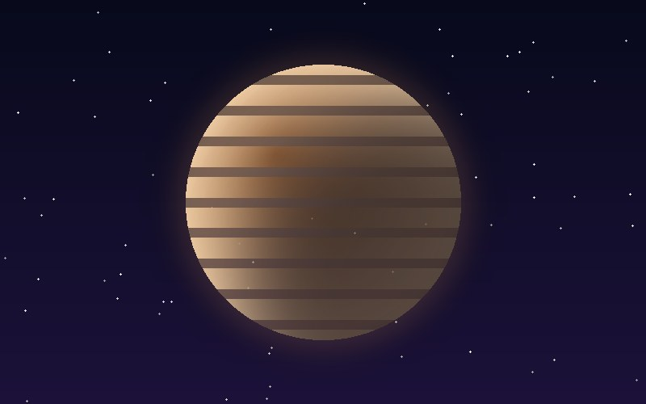
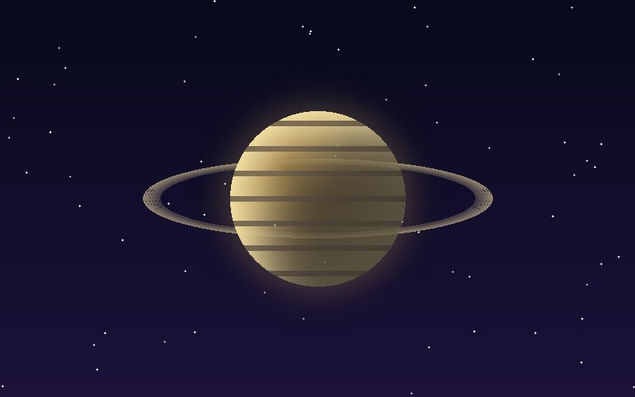
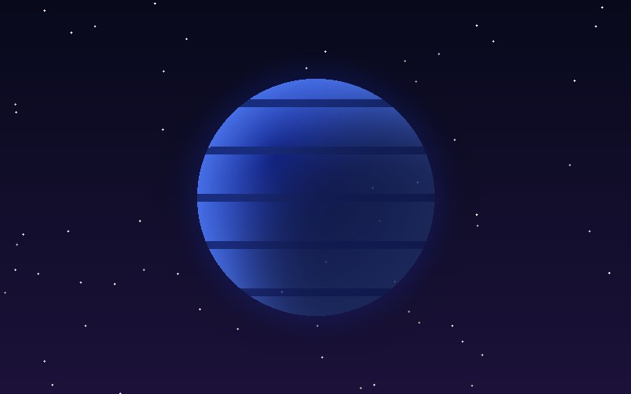

Gigantes gaseosos y helados
Más allá del cinturón de asteroides viven los planetas más grandes, formados sobre todo por hidrógeno, helio y hielos.

Júpiter
Su Gran Mancha Roja es una tormenta más grande que la Tierra que lleva siglos activa.

Saturno
Sus anillos están hechos de trozos de hielo y roca, desde granos de polvo hasta bloques del tamaño de una casa.

Neptuno
Tiene los vientos más rápidos del Sistema Solar, de más de 2,000 km/h.
Júpiter y Saturno son gigantes gaseosos: no tienen una superficie sólida donde aterrizar. Si una nave descendiera, atravesaría capas de gas cada vez más densas hasta que la presión la aplastara.
Urano y Neptuno se llaman gigantes helados porque, debajo de su atmósfera, contienen agua, amoniaco y metano en estado helado. El metano es el que les da su color azulado.
Urano es especialmente extraño: está inclinado casi 98 grados, así que rueda de lado alrededor del Sol. Cada uno de sus polos pasa 42 años de luz continua y 42 de oscuridad.
Tamaño comparado con Júpiter
Júpiter
Saturno
Urano
Neptuno